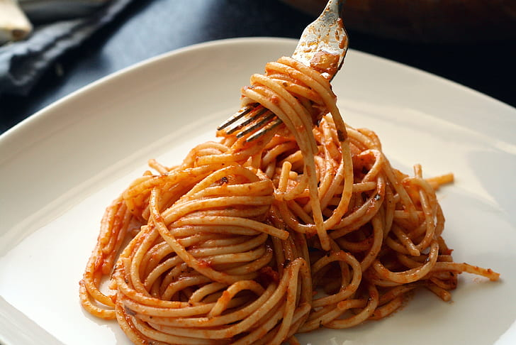

Home
Onion & Tomatoes Spaghetti

Description
A simple yet flavorful Italian pasta, this spaghetti combines sweet cherry tomatoes and mellow Tropea red
onion with capers, anchovies, fresh basil, chili, and Pecorino Romano. The result is a vibrant, savory sauce
that comes together quickly for an easy and satisfying meal.
Ingredients
- 150g spaghetti
- 150g Tropea red onion
- 40g Pecorino Romano
- 2 anchovy fillets
- 10–12 desalted capers
- 200g ripe cherry tomatoes (such as datterini or Pachino)
- 5–6 fresh basil leaves
- 1 chili pepper
- Salt
- Black pepper
- Extra-virgin olive oil
Steps
- Bring a pot of water to a boil for the pasta. Meanwhile, peel the onions, halve them, and slice them
thinly.
- Heat a drizzle of extra-virgin olive oil in a large frying pan over medium-low heat. Add the capers,
anchovies, and finely chopped chili pepper, and sauté until the anchovies have completely dissolved. For
a vegetarian version, replace the anchovies with a few extra capers.
- Add the onions, lower the heat once they start to sizzle, and season with salt and pepper. Stir well and
cook gently for 5–6 minutes.
- Wash and quarter the cherry tomatoes, then add them to the onions. Increase the heat and adjust the
seasoning with salt.
- Salt the boiling pasta water, take a ladleful, and add it to the sauce. Cover the pan and cook over very
low heat for about 10 minutes. Meanwhile, cook the spaghetti and grate the Pecorino Romano.
- Check the sauce occasionally and add more pasta water if it becomes too dry. Drain the spaghetti al
dente, reserving some of the cooking water, and add the pasta directly to the pan.
- Toss the spaghetti with the sauce, adding a little pasta water if needed. Turn off the heat, add the
grated Pecorino Romano, and mix well until everything is combined.
- Finish with the fresh basil, torn by hand, and some freshly ground black pepper to taste. Toss once more
and serve immediately.